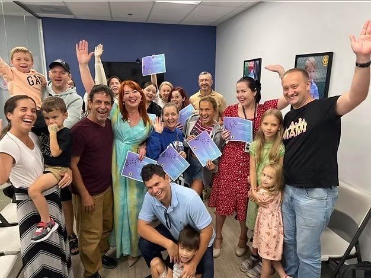

Impulses.art
Music as connection, healing, and light
La música ha acompañado cada etapa de mi vida: en los escenarios, en los estudios y en esos espacios íntimos donde la emoción habla más alto que las palabras. Con el tiempo, comprendí que la música hace mucho más que expresar: conecta, repara y abre espacios a los que el lenguaje cotidiano no puede llegar..
From that realization, and from my own journey as an immigrant rebuilding community far from home, the desire to serve others through art became impossible to ignore. Working with refugees, families, and vulnerable groups showed me that a single melody can change the emotional temperature of a room, soften fear, and awaken hope.
That is how Impulses was born: a project where music becomes a bridge, a breath, and a safe place.
If you want to learn more about this work and its mission, visit:

A Moment of Light
This image was taken after the fourth music-therapy session with a group of Ukrainian immigrants.
That day, after sharing stories marked by war and loss, something beautiful happened: they laughed, freely and unexpectedly.
Music created a space where pain could breathe and joy could return.
This moment represents the essence of Impulses.art: art as connection, healing, and light.